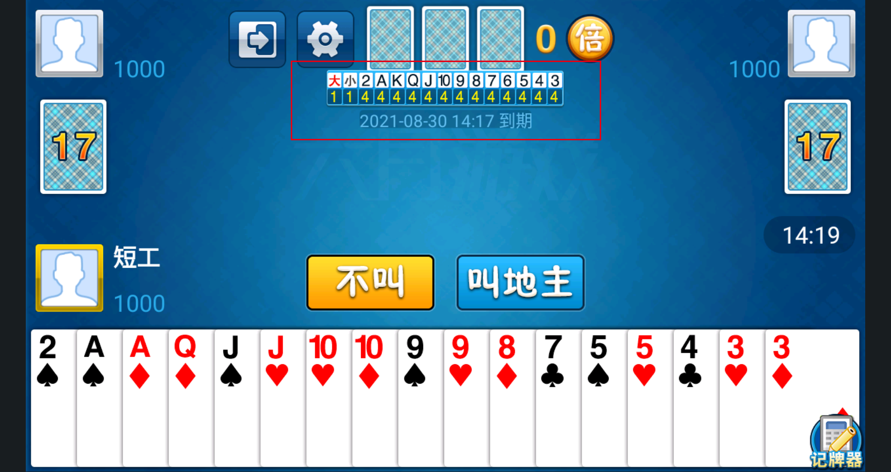
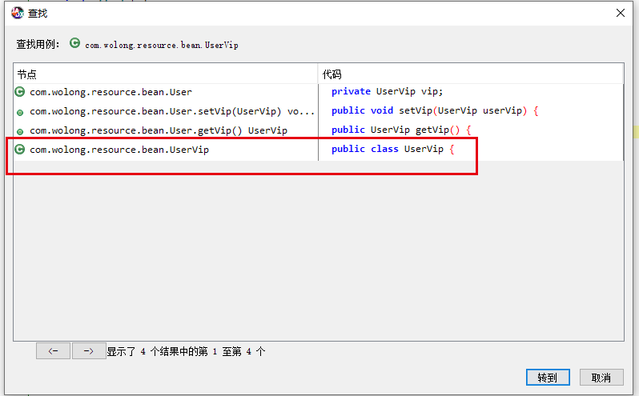
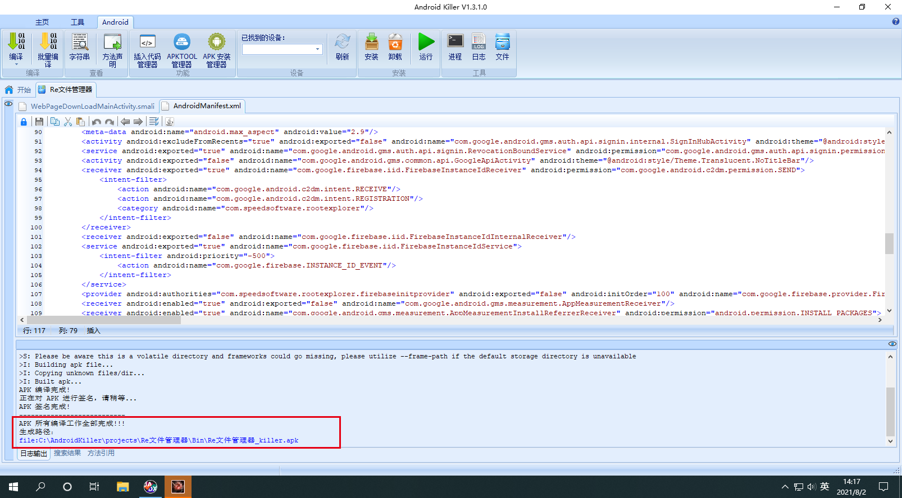
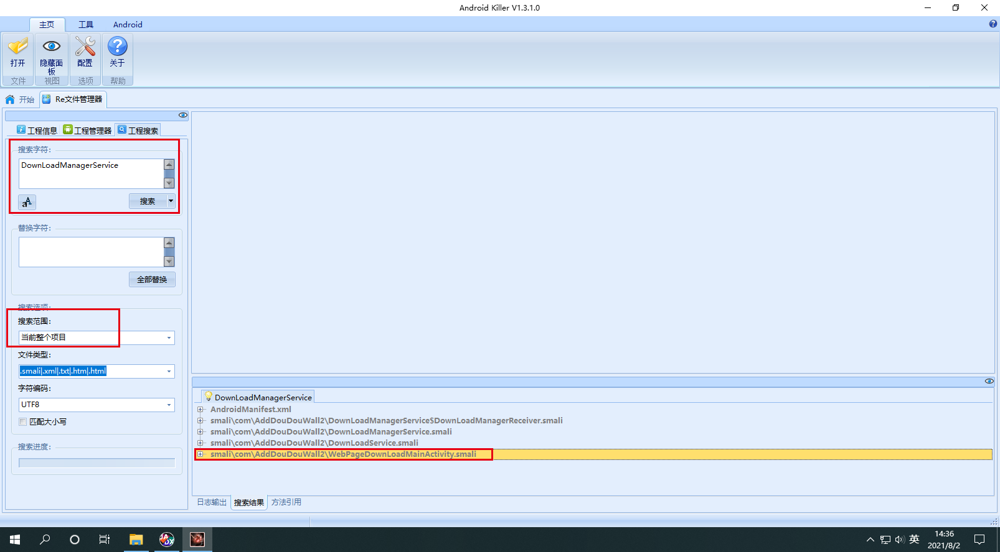
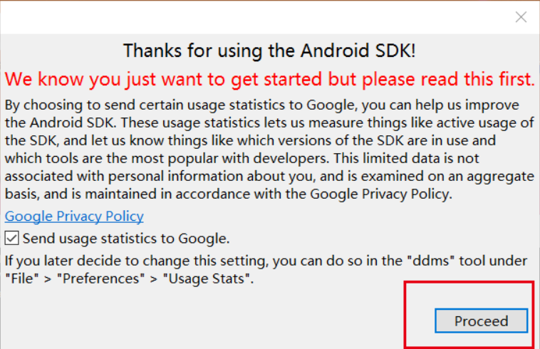
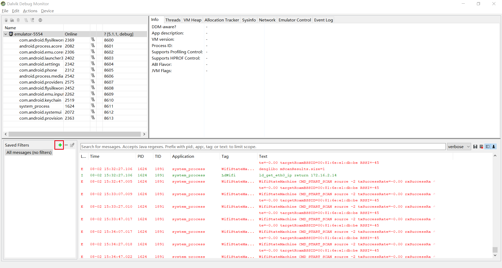
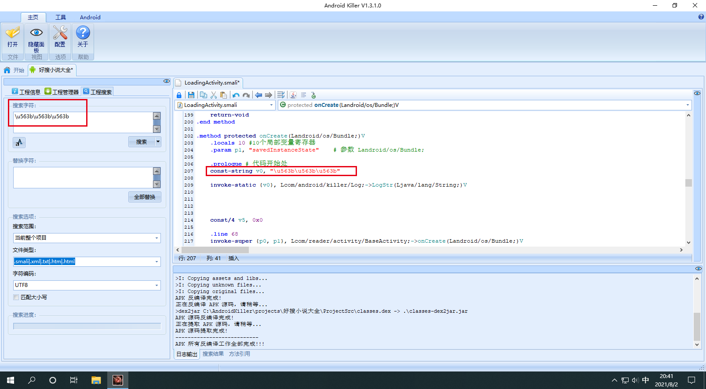
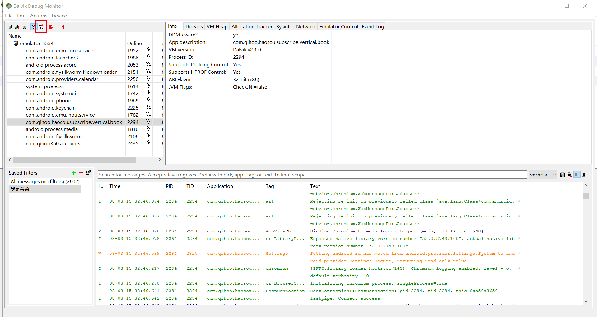

安卓学习思路方法总结（三）
这是第三篇
我们继续
Dalvik指令集
前言
基础字节码---名称后缀/字节码后缀
目的寄存器 源寄存
1、名称后缀是wide，表示数据宽度为64位
2、字节码后缀是from16，表示源寄存器为16位
3、move-wide/from16 vAA，vBBBB
分析一下：这里AA是目的寄存器没表示出来
BBBB，因为一个字母是4位，4个B就表示源寄存器为16位
整体分析：
move为基础字节码，即 opcode。
wide为名称后缀标识指令操作的数据宽度为64位。
from16为字节码后缀，标识源为一个16位的寄存器引用变量
vAA为目的寄存器，它始终在源的前面，取值范围为v~V255。
VBBBB为源寄存器，取值范围为v0~v65535
Dalvik指令集中大多数指令用到了寄存器作为目的操作数或源操作数
其中A/B/C/D/E/F/G/H代表一个4位的数值，
AA/BB/CC/DD/EE/FF/GG/HH代表8位的数值
AAAA/BBBB/…HHH则代表一个16位的数值
Dalvik指令使用
空操作指令
空操作指令的助记符为nop
它的值为00，通常nop指令被用来作对齐代码之用，无实际操作！
返回指令
1、"return-void"：表示函数从一个vod方法返回，返回值为空。
2、"return vAA"：表示函数返回一个32位非对象类型的值返回值寄存器为8位的寄存器vAA
3、"return-wide vAA"：表示函数返回一个64位非对象类型的值，返回值为8位的寄存器对vAA
4、"return-object vAA"：这里面出现了 object，表示函数返回一个对象类型的值。返回值为8位的寄存器vAA
数据定义指令
可以参考这里：
https://blog.csdn.net/u010164190/article/details/52089794
数据定义指令用来定义程序中用到的常量，字符串，类等数据。
1)"const/4 vA,#+B"：将数值符号扩展为32位后赋给寄存器vA。
2)"const/16 vAA,#+BBBB"：将数据符号扩展为32位后赋给寄存器
3)"const vAA，#+ BBBBBBBE"：将数值赋给寄存器vAA。
4)"const/high16 vAA,#+BBBB0O000"：将数值右边零扩展为32位后赋给寄存器vAA。
5)"const-string vAA,string@BBBB"：通过字符串索引构造一个字符串并赋给寄存器vAA。
6)"const-string/jumbo vAA,string@BBBBBBBB"：通过字符串索引
(较大)构造一个字符串并赋给寄存器vAA。
7)"const-class vAA,type@BBBB"：通过类型索引获取一个类引用并赋给寄存器vAA。
8)"const-class/jumbo vAAAA,type@BBBBBBBB"：通过给定的类型索引获取一个类引用并赋给寄存器 VAAAA
(这条指令占用两个字节值为0xoof(Android4.0中新增的指令))。
跳转指令
跳转指令用于从当前地址跳转到指定的偏移处。
跳转指令
(1)、goto：无条件跳转
(2)、switch：分支跳转
(3)、packed-switch：有规律跳转
(4)、sparse-switch：无规律跳转
(5)、if：条件跳转
if-eq：等于/if-ne：不等于
if-lt：小于/if-le：小于等于
if-gt：大于/if-ge：大于等于
if-eqz：等于0/if-nez：不等于0
if-1tz：小于0/if-1ez：小于等于0
if-gtz：大于0/if-gez：大于等于0
实例操作指令
1、"check-cast vAA,type@BBBB"
check-cast vO将vAA寄存器中的对象引用转换成指定的类型。如果失败会报出 Class CastException异常。
如果类型B指定的是基本类型，对于非基本类型的A来说，运行时始终会失败
2、"instance-of vA,vB"
判断vB寄存器中的对象引用是否可以转换成指定的类型。
如果可以vA寄存器赋值为1，否则vA寄存器赋值为0
3、"new-instance vAA,type@BBBB"
构造一个指定类型对象的新实例，并将对象引用赋值给vAA寄存器。
类型符type指定的类型不能是数组类。
数组操作类型
数组操作包括获取数组长度，新建数组，数组赋值，数组元素取值与赋值等操作。
1、array-length vA，vB"
获取给定vB寄存器中数组的长度并将值赋给A寄存器。
数组长度指的是数组的条目个数。
2、"new-array vA,vB,type@CCCC"：
构造指定类型(type@CCCC)与大小(vB)的数组，并将值赋给vA寄存器
异常指令
"throw vAA"：抛出vAA寄存器中指定类型的异常
比较指令(cmp)
比较指令用于对两个寄存器的值(浮点型或长整型)进行比较
大于(1)/等于(0)/小于(-1)-->cmpg、cmp
大于(-1)/等于(0)/小于(1)--->cmpl
字段操作指令
字段是成员变量
普通字段
iget读 iput写
iget读是从后往前走
iput写是从前往后走
静态字段
sget读 sput写
方法调用指令
根据方法类型不同，共有5条方法调用指令
1、invoke-virtua|：调用实例的虚方法(普通方法)
2、invoke-super：调用实例的父类/基类方法
3、invoke-direct：调用实例的直接方法
4、invoke-static：调用实例的静态方法
5、invoke-interface：调用实例的接口方法
数据转换指令
数据转换指令用于将一种类型的数值转换成另一种类型。
它的格式为opcode VA，vB
vB寄存器存放需要转换的数据，转换后的结果保存在vA寄存器中
neg---数据类型--->求补
not---数据类型--->求反
数据类型1-to-数据类型2--->将数据类型1转换为数据类型2
APK快速上手小技巧
1、快速定位关键代码
搜索特征字符串
比如购买、VIP、支付取消、余额不足等
搜索关键api
支付宝、微信......关键字
通过方法名来判断方法的功能
比如方法的名称，每个程序都有自己的规范等！
反编译APK程序
AndroidMainfest.xml-->包名/系统版本/组件
程序的主 activity(程序入口界面)
每个 Android程序有且只有一个主 Activity分析程序的执行流程
需重点关注的 application
1.application执行时间
2.授权验证
2、定位关键代码的技巧
1)信息反馈法(资源id/字符串)
比如支付成功，支付失败等！
2)特征函数法
比如api函数
3)顺序查看法
进行分析程序执行流程/病毒分析
4)代码注入法
动态调式/插入log查看 logcat/分析加解密
5)栈跟踪法
动态调式/函数调用流程
使用IDA进行分析
6)Method Profiling
方法剖析-->动态调式/热点分析/函数调用流程
3、关键词
方法名和游戏方法名
onResult，onchinabilling，resulton，Paycenter，Callback
爱游戏方法名
paySuccess（成功）payFailed（失败）payCancel（成功）
沃游戏方法名
OnPayResult，PyaResulton，Activity，result，callback
4399游戏方法名
notifydelivergoods
支付宝和银行卡方法名
handle，message
移动MM方法名
onBillingFinish，Billing，CallBack
360支付
onfnished on Activityresult
支付宝搜索字符串：9000
咪咕游戏搜索常量：onresult
发送短信权
android.permission.SEND_SMS
锁定支付模式关键字符串：CHINA TELECOM
支付上限
carrier_pay_out limit，no_propriate_pay_method
谷歌广告
Missing internet permission in AndroidManifest.xml
运营商网络特征码备注
中国移动46000、46002、46007、46020return 0 getMobile Type中国联通46001、46006、46010return 2 getOperatorType中国电信46003、46005、46011return 1 getSimType
实操一：单地斗地主
用单机斗地主来学习
前言
也是有多人对战的
我们的目标是：跳过这个支付宝支付，购买该程序软件内容呢
采用Android Killer和jadx-gui两个软件的混合使用
jadx-gui查看Java代码
把APK丢到jadx-gui中
我们要点击这个搜索类
APK才算反编译完成
我们知道的在支付宝中搜索的字符串：9000(支付成功)
进行搜索
"9000"
双击搜索内容 进来之后看到了 Java代码
public void a(String str) { String a2 = new e(str).a();
理解一下：public void方法里传入了一个 String，String a2 new了一个string
我们再去看看方法a里面写了什么
public String a() { return this.f554a; }
这个方法最终会返回一个方法：f554a
继续向下分析
几个if语句进行判断
成功的话进入UMGameAgent.pay这个 商品选择阶段
前面是天数 后面是金额
那么这里的思路：
思路一：如果把30天20块钱的代码放入2天2块钱的代码替换后，是不是可以买30天的记牌器只用花2块钱
思路二：8000是支付成功和9000是支付失败，那么调换位置呢
我们继续往上看
看看w方法的调用
选中w之后 右键查找用例
进行查看
同样是if判断，这里是采用了赋值操作
可以看到传入两个int参数i和i2，string也进入记牌器
然后判断2==i、7==i、30==i
然后赋值d2
那么思路三：可以将此处20改为0吗
Android Killer进行查看smali代码
把APK丢到Android Killer中
然后去搜索字符串：9000(支付成功)
进行逻辑分析
很好理解的
const-string v1：把v1定义为9000(支付成功)
equals：v0和v1进行了个比较，返回结果放到v1里面
if-eqz：如果v1等于0跳到cond_4
那么去看看cond_4
继续进行逻辑分析
const-string v1：把v1定义为8000(支付失败)
invoke-static：是方法调用指令中的：调用实例的静态方法 建议回头去看一下
equals：v0和v1进行了个比较，返回结果放到v0里面
if-eqz：如果v0等于0跳到cond_1
那么我们继续 去看看cond_1
goto是跳转指令中的：无条件跳转
return-void：就是结束了
那么最简单的一个方法：
if-eqz v1, :cond_4改为if-nez v1, :cond_4
支付失败 执行支付成功

保存之后 编译输出
进行查看

可以看到我们其实 是支付失败的 但是因为执行的是支付成功
所以依然可以使用
是不是蛮简单的？但是其实并不是 我感觉要多加练习，你要抓住那个点，多加练习才可以
继续加油
再来一个实操
实操二：卧龙影视
以卧龙影视进行演示
前言
当我们点击之后 它会加载广告
那么我们使用之前的方法安卓(一)是不是可以删掉第一个跳转的界面 进行去广告操作呢 是可以的
小伙伴们可以去尝试一波
今天破解的就是它的Vip功能
如上操作
jadx-gui查看Java代码
要破解Vip，这里大部分所有APK的环境下都是搜索getVip
这里要注意：
1、搜索勾选代码
2、我们要破解的是用户的Vip
往上翻 针对UserVip
右键查找用例

这是一个实体类
分析一下
is vip(是否是Vip)、
End(vip结束时间)、Start(vip开始时间)
那么继续针对getIsVip进行查找用例
那么我们这里：让 getVip返回值不为空
Android Killer进行查看smali代码
根据包package 在Android Killer中找对应目录
注意这里是：smali_classes2
我们要改的smali代码就是UserVip.smali
然后找到public getVip()
进行分析
这个方法使用到locals 1—个寄存器
iget读取字段，v0是我们的寄存器，p0是从之前用户判断过来的值，这里就是用户去读取v0
如果p0是Vip那么v0就是Vip，如果p0不是Vip那么v0肯定不是Vip
最后return v0寄存器
我们的目标是：让getvip返回值不为空就行
const v0,0x1

回编译成功
关于回编译失败问题：
1、APKTOOL版本问题
2、Java环境问题
然后我们继续 去查看一下
当我们注册登录之后 成功拿到Vip
实操三：起名软件
前言
点开这个软件
需要Vip会员
如上操作
jadx-gui查看Java代码
针对关键字
可以选择五行
只要和Vip相关 就离不开GetVip
进行分析：
达到这个switch中的group.getCheckedRadioButtonId这个条件
就会进行金木水火士判断执行
Android Killer进行查看smali代码
根据Java代码中的package找到gsname文件夹
找到
可以看到下面有很多的ChengYuListActivity$*.smali
这是因为把dex反编译成smali时候会把所有的内部类、抽象类、接口类等全部都提取出来，用来单独存放
然后就能看到这么多的 Activity
解码："姓不能为空，请输入"
并不是我们要修改的内容
VIP会员，可以选择五行。VIP会员升级请点击右下角会员专区
我们可以看到结果是在内部类中
总共有两处
先点开第一处
我们进行分析
看到了setChecked(Z)V传了个Z
Z就是fase进去，此时是跳转下来的
继续向上看到了cond_0这里是从这儿跳转下来的
那么往上看看cond_0
找到cond_0
if-eqz v1, :cond_0
那么我们把这里一样的if-eqz：等于0/if-nez：不等于0
修改为if-nez 就可以了
继续看第二处
第二处也是一样的
向上跳转找cond_0
if-eqz v1, :cond_0
改成
if-nez v1, :cond_0
保存修改
然后回编译
进行尝试
还是不行
换个方式
既然是要Vip 那么就去改GetVip的方法
搜索出来挺多结果的
但是大部分都是调用的信息 我们要找的是定义的信息
那么我们尝试注释掉这个
保存之后 回编译 进行尝试
进行尝试
是成功的
实操四：RE文件管理器
前言
进行安装
然后我们打开
可以看到文件权限
当我们点击退出之后 它会弹出广告
然后当我们 点击一个广告之后
它会把这应用添加到后台进行下载
那么我们的目标就是去掉APK退出时 加载的广告
首先开始adb进行抓这个APP的包
adb shell dumpsys activity top
然后发现这个类
com.AddDouDouWall2.WebPageDownLoadMainActivity 676828b pid=2506
jadx-gui分析
将APK丢到jadx-gui中进行分析
进行反编译
进行搜索
WebPageDownLoadMainActivity
点击进来 进行查看
一些按钮 true 和 flase
然后 有一个地址
我们进行访问看一下
发现 它就是我们退出时候的那个广告页面
那么 这里 是不是可以放上我们的钓鱼页面呢
继续
addContentView(this.webView, params);
增加了一个addContentView把这些 webview，params传进去然后
startService(new Intent(this, DownLoadManagerService.class));
最重要的一点还是这startService，我们看看逻辑
可以看到DownLoadManagerService去继承了一个Service类，
那么我们不让它去继承 是不是就破解了
继续
查找用例

public void onDestroy() {
Intent iii;
w a2;
if (isNetworkAvailable(this)) {
startActivity(new Intent(this, WebPageDownLoadMainActivity.class));
}
看这个onDestroy
isNetworkAvailable查询当前一个网络状况
如果有网络就startActivity
继续
Android Killer分析
将APK丢进来
首先搜索
WebPageDownLoadMainActivity
进入AndroidMainfest.xml 它是APK的配置文件
然后搜索这个网址
然后我们删掉这个URL 根据第一节 去广告的知识 安卓学习(一)
我们知道 删掉这个页面 它就不会加载了 但是依然会有那个白屏的界面
那么我们如果放上自己的钓鱼页面呢
拿百度进行举例
保存 回编译 
进行查看
当我们继续退出的时候

成功跳转到百度 说明是可以的
然后继续
搜索DownLoadManagerService 我们是要找Web层的

定位startService这个方法
v4集合到p0里面 然后就return-void退出了
然后我们去搜索这个onDestroy方法
根据package
package com.speedsoftware.rootexplorer;
成功找到
进行分析
找到 onDestroy
isNetworkAvailable进行一个判断
if-eqz v0, :cond_0
然后返回一个v0有没有网络，如果v0等于0就跳转到cond_0
继续向下执行 就跳转到
那么我们进行修改就可以了
if-nez v0, :cond_0
进行回编译
进行查看
当我们点击的时候 成功退出了
实操五：车来了
前言
进行安装
打开
可以看到 广告
那么我们的目标就是：去掉这些中间的广告
今天这里运用ddms
ddms
进行启动

它可以对栈和堆进行跟踪
ddms基本界面
它给我们的一个设备
这个就是 读取目前存活的设备
adb devices
而
dumpsys activity top
它是抓取当前顶层的页面信息
这都是相对应的
继续

分别对应package、端口、PID
继续

这是一个过滤寄存器

一般只用填这两个
继续
存活机器 运行应用之后 会有信息
这里是毫秒输出
然后向右走
这是6个级别
然后我们进行分析
这里提示成功发送第三方埋点
还附带了链接
这就是APK中途的一些信息
然后我们右键 选择这个
找到他的包名
com.ygkj.chelaile.standard

添加过滤寄存器
添加之后 就只会有这个包的信息
我们继续右键 进行分析
发现这些广告 都是基于
这个域名
atrace.chelaile.net.cn
那么第一个思路 就是 我们把这个域名替换成
127.0.0.1
Android Killer分析
进行搜索
进行替换
进行回编译
进行查看
因为一些原因 换了 模拟器 现在是雷电

可以看到 中间的广告没有了
实操六：好搜小说大全
添加injectcode
这里要给Android Killer添加injectcode
原目录
添加后的目录
重启AndroidKiller
把好搜小说的APK丢到AndroidKiller中
随意找一个smali代码看看效果
这里要注意一下
一个app程序的入口点比入口界面执行得更早
这点一定要记住
Log信息输出插桩
进入入口点smali代码 进行分析
我们前面在学习Actvity知道 onCreate()是最开始的建立的地方
这个可以看在安卓学习思路方法总结（二）中的图解
我们开始分析onCreate()

所以插桩就是在代码开始处进行实现
在下面空白处 右键插入-->代码-->Log信息输出

这里是要输入的文字unicode码
进行Unicode 转换
嘻嘻\u563b\u563b\u563b

进行分析
const-string在安卓学习思路方法总结（三）中讲过
它是数据定义指令
同样invoke-stati也在安卓学习思路方法总结（三）中讲过
它是方法调用指令，用来调用实例的静态方法
继续
还需要在程序的入口点插入Log信息
查找清单文件：Application.xml
进行分析
android:name="com.reader.ReaderApplication"
后面有路径
那么在工程管理器中
继续查找com.reader.ReaderApplication
进入之后
继续锁定onCreate()方法
继续在.prologue下进行插桩
这次我们插入一个
哈哈哈\u54c8\u54c8\u54c8
保存 进行回编译
进行查看

ddms
这个时候我们进行 ddms抓包
成功连接到设备 并且有信息输出
哈哈哈是入口点
嘻嘻嘻是入口界面
两者只有几毫秒的差别
但是入口点永远比入口界面执行的更早
一些问题解决
一、程序崩溃
中间出现的问题
当我们成功插桩 APK回编译成功
但是在模拟器中
打开失败 程序崩溃 点击没反应
因为插桩导致寄存器不够用，需要加一些寄存器
进行全局搜索
locals 0
随意修改
修改为 加一些寄存器
locals 1或locals 2
进行回编译
二、init()
我们也喜欢在init()这个方法这里进行插桩
因为init表示这个方法在初始化，在初始化状态下是不会去调用任何寄存器状态，没加载入口点
栈跟踪：好搜小说大全
继续就上一个实操的
APK：好搜小说大全
获取当前界面进程
adb shell dumpsys activity top
com.qihoo.haosou.subscribe.vertical.book
ddms
进入该界面调取程序栈
然后进行过滤寄存器的添加
进行查看输出的信息
开始第一个关注点：System.err
这里要理解一下中间的关系
上层是调用者 下层是被调用者
我们看的时候 应该是从下往上看
StackTrace栈跟踪
然后StackTrace栈跟踪的插桩
同样是找到入口点的smali代码
然后锁定loadData()方法
简单分析一下
我们加入了两个局部变量寄存器v0和v1
程序本身locals也存在两个局部变量寄存器，所以就不需要修改了
然后print trace是打印栈
new-instance v0, Ljava/lang/Exception; const-string v1, "print trace" invoke-direct {v0, v1}, Ljava/lang/Exception;-><init>(Ljava/lang/String;)V invoke-virtual {v0}, Ljava/lang/Exception;->printStackTrace()V
然后保存 进行回编译
模拟器重新安装 进行打开
ddms2
继续上ddms 进行分析
依然 进行 过滤寄存器的锁定
这里没有这个信息的话
可以重启 一下ddms
看到System.err 同时打印了print.trace
是从那里开始的
同样是从下往上看
然后我们呢 是从loadData下插入 StackTrace栈跟踪 也续上了
请记住：从下网上看！

然后进行 登录界面的栈跟踪
然后取ddms中进行：暂停分析栈
当我们随意的选择一个类的时候
菜单栏中的 按钮就可以用了
我圈注的这个是：暂停分析栈
当我们点击它之后
第一个选择是自定过滤
第二个选择是打印所有的
选择第一个 1000就可以
然后OK 之后
点击进行启动

然后等待 一会 就会弹出一个窗口
总共有246个方法
这个取决于点击立即登录的速度
进行分析一下节点
Parents：父节点 当前方法的上层调用
如果父节点下面没有节点，就是系统自启动的
Children：子节点 当前方法的下层调用
可以理解 Children以下的都是 Parents子节点
调用的是一个循环体
这里就是：1分支--->0分支--->26分支--->循环体--->0分支--->1分支
然后1分支 又会开始另外的循环
然后参数解读

分析：onclick
那么就是 85分支--->84分支--->83分支
这是一个登录逻辑
OK 这篇就到这里 栈跟踪一定要会
请注意：这里使用的技术仅用于学习知识目的，如果列出的技术用于其他任何目标，我概不负责。
- 发表于 2021-08-20 09:48:48
- 阅读 ( 956 )
- 分类：WEB安全